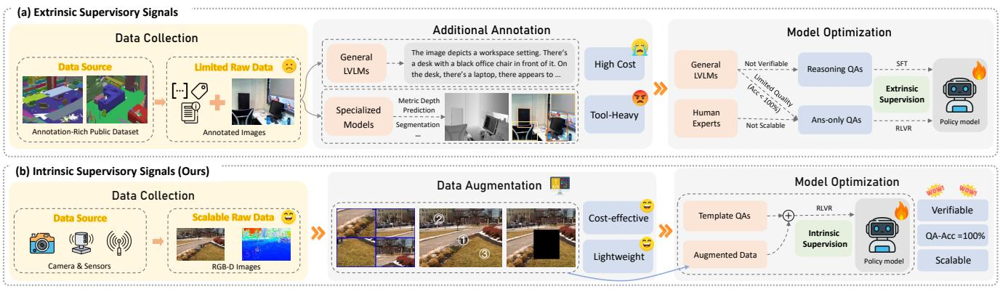

(a) Comparison of Responses to Spatial Understanding Problems (b) Comparison of Performanc(a) Comparison of Responses to Spatial Understanding Problems (b) Comparison of Performance Figure 1. We present Spatial-SSRL, a self-supervised reinforcement learning paradigm for spatial understanding. (a) Qualitative examples: the baseline answers are wrong (red), whereas our model predicts correctly (green) for 3D locations and orientations. (b) Quantitative results on seven spatial benchmarks show consistent improvements of Spatial-SSRL-7B against Qwen2.5-VL-7B and its CoT variant.这张图/表用于判断 Spatial-SSRL 的实验收益来自哪里。重点看替换、消融或跨模型设置下趋势是否一致，而不是只看单个最高分。

Figureure 2 · (a) Prior pipelines boost spatial understanding by injecting extrinsicFigure 2. (a) Prior pipelines boost spatial understanding by injecting extrinsic supervision from expert tools or synthetic environments, which inflates cost and limits scalability. (b) Our Spatial-SSRL replaces these dependencies with intrinsic self-supervision, yielding a scalable, lightweight, low-cost, and naturally verifiable pipeline.这张图概括 Spatial-SSRL 的整体方法流程。阅读时先看模块之间传递的训练信号，再看作者如何把目标拆成可优化的子问题。